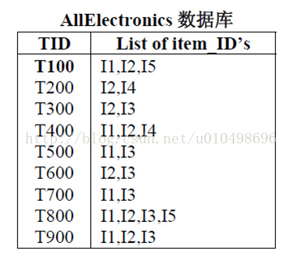
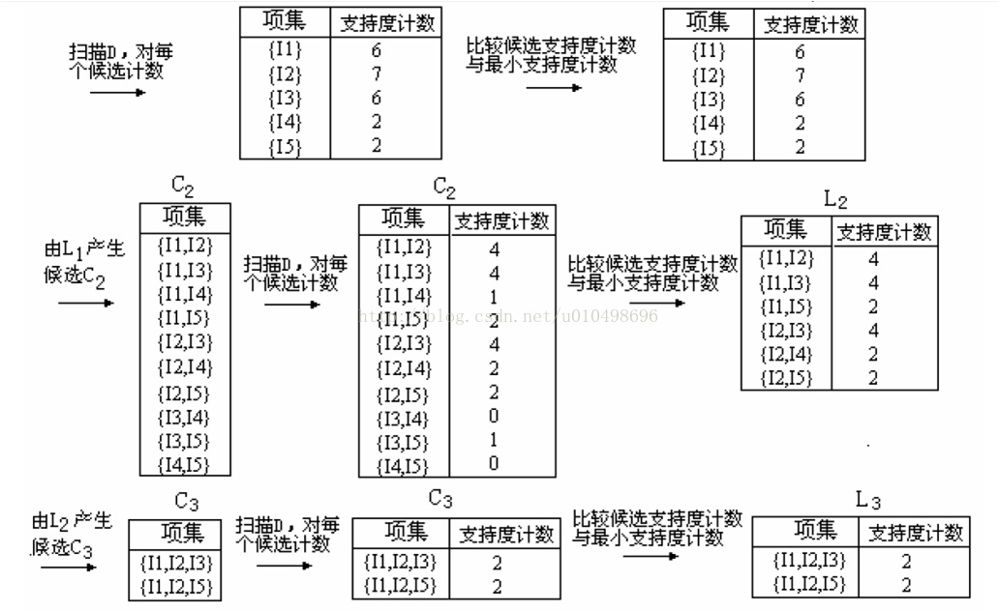

前言
之前学校开的选修课《数据挖掘》，布置的两道算法题，时间有限完成其中一道：用Apriori算法求特定支持度的频繁项集。
算法本身不难，java萌新我却花费了一天的时间，特此记录。
算法描述


我们目的是求出项数为K的频繁项集即L(K)。
Apriori算法的核心步骤是：
- L(K-1)通过自连接求出项数为K的候选项集合C(K)
- 通过对C(K)进行一系列处理（剪枝 + 支持度判断） 得到L(K)集合
在说明下面更多内容之前，先对一部分概念进行说明：
- 事务：如第一张图中，每一行就是一个事务，如
T100 I1,I2,I5。其中T100是事务编号，这个随便命名，只要保证唯一即可。后面的I1 I2 I5是该事务中的项 - 数据集：如图一，整个表就是数据集，就是所有的事务的集合。即D = {T100,T200…}
- 项集：包含若干个项（如I1 、I2这样的项）的集合。可以看出项集和事务似乎有点项。但是项集更随意一点，任意几个项都能组成一个项集。但是事务是人为规定好的。
- 可信度：项集在数据集中出现的重复次数。项集不一定需要在事务中连续出现。如{I1,I2,I5}项集在数据集中出现的次数为2次，分别是第一个和倒数第二个事务。
接下来，详细分析算法中的两个步骤：
1. 自连接：
怎么个连接法呢？以图二中的L2频繁集的集合为例：
| 项集 | 支持度 |
|---|---|
| {I1,I2} | 4 |
| {I1,I3} | 4 |
| {I1,I5} | 2 |
| {I2,I3} | 4 |
| {I2,I4} | 2 |
| {I2,I5} | 2 |
判断两个项集是否可以自连接要看两个项集的K-1项是否完全相同。如果满足条件，连接后的项集 = 第一个项集 + 第二个项集的最后一个元素。
比如{I1 I2}与{I1 I3}满足自连接条件，连接后的项集为{I1 I2 I3}。
2. 剪枝：
剪枝是这个算法的核心，如果不进行这个步骤的话，也能得出正确结果，但是时间就会大大增加了。
剪枝的核心是若某个集合存在一个非空子集不是频繁项集，则该集合不是频繁项集。
我们通过自连接组成新的K项的候选项集后，需要通过剪枝判断是否满足条件。
即找出该候选项集的含有(K-1)项的子集，并分别判断每个子集是否存在于K-1项频繁项集里。只要有一个不存在，那么该K项候选项集也不可能是频繁项集。
这里我们只需要找含有K-1项的子集，而不用找所有的子集，因为这个算法是从下不断递归上来的，含有更少项的子集肯定是在频繁子集里的。
问题关键是怎么寻找某个K项集的K-1项子集呢？
很简单，依次把K项集中的每个元素去掉一个就可以了。
完成了这两步骤，就完成了这个算法了核心步骤。
3. 对精简后候选集统计每一个项集的支持度
4. 根据最小支持度将候选项集转换为K项频繁项集合
可以看出，如果不剪枝的话，第三步的工作量是非常大的。剪枝过后，候选集的体积大大减小了。
但是获取含有一项的频繁项集因为没有候选项集，就需要特殊处理。
这个很简单，就是统计数据集中的每一项的支持度，并和最小支持度进行比较，得到含有一项的频繁项集。
代码分析
github项目地址：https://github.com/ihewro/Apriori
import java.io.BufferedReader;
import java.io.File;
import java.io.FileInputStream;
import java.io.InputStreamReader;
import java.util.*;
/**
* @author 何炜
* 算法名称：数据挖掘：Apriori算法求特性支持度下的所有的频繁集
* 算法原理：
*
* 0. 获取C1的时候，因为没有L(0)频繁集，所以单独处理一个函数
* 1. 已经频繁集L(k-1)，{}自连接+剪枝}求出精简后的候选集C(k)
* 2. 根据精简后的候选集C(k)根据求出频繁集L(k)
*
* 数据结构：
* 1. 使用List<String> 存储整个数据库的数据，string代表每一行的数据
* 2. 使用HashMap<String,Integer> 存储项集以及项集的重复次数，便于查找。是{项集}的集合。
* 3. 每个项集用String类型存储。项集中的每一项使用String.split(" ")方法变成数据，以便取用项集中的每一项
*
* 给定的数据格式：
* 1. 每个数据以空格隔开
* 2. 每一行代表一个事务T,事务编号就是行号
*
* 示例数据：
* 1. {11，12，13}是一个频繁项集，是属于HashMap<String,Integer>中的一个元素，数据类型为String.
* 2. Set<String> = HashMap.keySet(); 用来存储HashMap的所有key的值，也就是存储所有的项集（不包括项集的重复次数）
*
* 相关概念：
* 1. 支持度百分比
* 2. 支持度
* 3. 事务
* 4. 候选项集
* 5. 频繁项集
*/
public class Main {
private static double SUPPORT_PERCENT = 0.01;
private static List<String> data2DList = new ArrayList<>();
public static void main(String[] args) {
System.out.println("===================Apriori算法主程序界面====================");
//0. 输入数据
/*Scanner in=new Scanner(System.in);
SUPPORT_PERCENT = in.nextDouble();*/
//1. 导入数据
importData();
//2. 进行算法处理
apriori();
}
/**
* Apriori算法主程序，需要递归处理
*
* @return
*/
public static void apriori(){
//扫描整个数据库D，对每一项进行计数，获得一项的{候选项集合}
Map<String, Integer> stepFrequentSetMap = new HashMap<>();
System.out.println("\n=====================第" + 1 + "次扫描的频繁项集列表======================" + "\n");
stepFrequentSetMap.putAll(getFrequentSets(findCandidateOneSets()));
Set<String> stringSet = stepFrequentSetMap.keySet();
for (String string: stringSet){
System.out.println("频繁集：" + string + "支持度:" + stepFrequentSetMap.get(string));
}
System.out.println("\n频繁项集的个数：" + stringSet.size());
int i = 1;
//当生成的频繁项集为空的时候，退出循环
while(stepFrequentSetMap != null && stepFrequentSetMap.size()>0){
i++;
//打印当前的频繁项集的信息
System.out.println("\n=====================第" + i + "次扫描的频繁项集列表======================" + "\n");
stepFrequentSetMap = getFrequentSets(getMinCandidate(stepFrequentSetMap));
if (stepFrequentSetMap != null){
stringSet = stepFrequentSetMap.keySet();
for (String string: stringSet){
System.out.println("频繁集：" + string + "支持度:" + stepFrequentSetMap.get(string));
}
System.out.println("\n频繁项集的个数：" + stringSet.size());
}
}
}
/**
* 导入数据
*
* @return 集合和集合，即二维集合
*/
private static void importData(){
File file = new File("retail.dat");
try {
//文件存在且为文件类型执行接下来的操作
if (file.isFile() && file.exists()){
InputStreamReader reader = new InputStreamReader(new FileInputStream(file),
"UTF-8");
BufferedReader bufferedReader = new BufferedReader(reader);
String lineTxt;
while ((lineTxt = bufferedReader.readLine()) != null){//读取文件中的一行
data2DList.add(lineTxt);
}
reader.close();
}else {
System.err.println("找不到指定文件！");
}
}catch (Exception e){
System.err.println("读取文件内容出错！");
e.printStackTrace();
}
}
/**
* 寻找1项的候选集C1（起始化特殊的处理）
*
* @return 返回map集合，这个集合是每一项以及对应的重复次数：key->value
*
* key：每一个候选项/频繁项
* value：相应候选项/频繁项的重复次数
*/
private static HashMap<String, Integer> findCandidateOneSets()
{
HashMap<String, Integer> resultSetMap = new HashMap<>();
for(String dataList :data2DList)
{
String[] dataString = dataList.split(" ");
//查询map集合中是否有该元素，如果没有，加入该元素，否则给该元素对于的value(重复次数）+1
for (String string :dataString){
string += " ";
if (resultSetMap.get(string) == null){
resultSetMap.put(string,1);
}else {
resultSetMap.put(string,resultSetMap.get(string) + 1);
}
}
}
return resultSetMap;
}
/**
* 从L(k-1)频繁集合中得到精简的C(k)候选集
*
* 1. {连接 + 剪枝} = {精简后的候选集C(k)}
* 是对L(k-1)频繁集的每一个集合，进行[边连接成候选集，边剪枝]而不是先全部生成了{候选集}，然后再进行一次大循环，进行剪枝，这样会增加时间复杂度
*
* 先验原则：若某个集合存在一个非空子集不是频繁项集，则该集合不是频繁项集
*
* 1. 根据先验原则压缩候选集大小后得到精简的候选集集合
* 2. 对精简过的候选项集进行累加计数
*
* @param frequentMapSet
* @return 返回C(k)候选集合
*/
private static Map<String, Integer> getMinCandidate(Map<String, Integer> frequentMapSet){
//需要返回的精简过后的候选项集
Map<String,Integer> minCandidateMapSet = new HashMap<>();
//导入频繁项集的KEY
Set<String> frequentSet = frequentMapSet.keySet();
/**
* 1. {自连接过程:产生候选项集}
*
* 对于每一个项集，拆开成项的数组。将该项集的每一项与其他项集的每一项比较，
* 如果有不重复的项，就将该项与原项集链接起来，组成K项的候选项项集。
*/
for (String frequentItemList1: frequentSet){
for (String frequentItemList2: frequentSet){
String[] itemArray1 = frequentItemList1.split(" ");
String[] itemArray2 = frequentItemList2.split(" ");
//自连接生成的候选项集
String linkString = "";
boolean flag = true;//是否可以连接
/**
* 判断是否可以自连接的条件：
* 1. 前K-1项必须相同
* 2. itemArray1的最后一项必须小于第二个项集的最后一项
* 自连接过程：
* 将第一个项集与第二个项集的最后一项连接起来
*/
for (int i =0;i<itemArray1.length -1 ;i++){
if (itemArray1[i].equals(itemArray2[i])){
flag = false;
break;
}
}
if (flag && itemArray1[itemArray1.length - 1].compareTo(itemArray2[itemArray1.length -1]) < 0){
linkString = frequentItemList1 + itemArray2[itemArray2.length - 1] + " ";
}
/**
* 2. {剪枝过程，也就是先验规则的使用}
*
* 找出该候选集的所有子集，并判断每个子集是否属于频繁子集
*/
boolean hasInfrequentSubSet = false;// 是否有非频繁子项集，默认无
if (linkString != ""){//自连接成功
//System.out.println(linkString);
//候选项集的所有项的数组
String[] itemArray = linkString.split(" ");
//*重点：找出该候选集的所有子集，实际操作的时候只需要找出比候选集少一项的子集集合
//*重点：因为这都是不断的递归上来的，项数更小的项集肯定是频繁项集
for (int i = 0; i <itemArray.length; i++){
String subString = "";
for (int j = 0;j<itemArray.length; j++){
if (j!=i){
subString += itemArray[j] + " ";
}
}
if (frequentMapSet.get(subString) == null){
hasInfrequentSubSet = true;
break;
}
}
}else{
hasInfrequentSubSet = true;//这里并不是代表存在非频繁子集，只是表示没有自连接成功，没有找到候选集
}
//自连接成功，加入到候选集集合中
if (!hasInfrequentSubSet){
minCandidateMapSet.put(linkString,0);
}
}
}
/**
* 3. {对生成的候选集进行统计支持度}
*/
Set<String> minCandidateSet = minCandidateMapSet.keySet();
// 将每一行的候选项集，由String数据变成字符串数组。
// 将每一行的事务，由String转换成List<String>
for (String itemList: minCandidateSet){
String[] strings = itemList.split(" ");
int num = 0;
for (String data:data2DList){
List<String>dataList = Arrays.asList(data.split(" "));
Boolean flag = true;
//如果候选项集中有一项在当前事务中找不到，支持度则不会增加
for (int i =0;i < strings.length;i++){
if (!dataList.contains(strings[i])){
flag = false;
break;
}
}
if (flag){
minCandidateMapSet.put(itemList,minCandidateMapSet.get(itemList) + 1);
}
}
}
return minCandidateMapSet;
}
/**
* 从精简后的C(k)候选集中得到L(k)频繁集合
*
* {统计精简后的候选集C(k)的重复次数} = {最后得到L(k)频繁集}
*
* 1. 对精简过的候选集进行判断（之前已经做好了计数工作），不满足支持度的进行排除
*
* @param minCandidateMapSet
* @return
*/
private static Map<String, Integer> getFrequentSets(Map<String, Integer> minCandidateMapSet){
if (minCandidateMapSet == null){
//精简后的候选集为空，表示当前项数的候选集不存在，此时需要结束该算法了
System.err.println("候选项集为空");
return null;
}else{
Map<String,Integer> frequentMapSet = new HashMap<>();//需要返回的频繁项集
Set<String> minCandidateSet = minCandidateMapSet.keySet();//获取候选项集的KEY，也就是所有的项集的具体数据
Double SUPPORT = (data2DList.size() * SUPPORT_PERCENT);//最小支持度
//Double SUPPORT = 5.0;
System.out.println("最小支持度为：" + SUPPORT + " 候选项集的大小为：" + minCandidateMapSet.size() + "\n");
for (String itemListString: minCandidateSet){
//如果该项集的重复次数大于或者等于最小支持度，就把该项加入到频繁项即中
if (minCandidateMapSet.get(itemListString) >= SUPPORT){
frequentMapSet.put(itemListString,minCandidateMapSet.get(itemListString));
}
}
if (frequentMapSet.size() == 0){
//计算得到的频繁项集为空，表示此时循环应该结束了
return null;
}else{
return frequentMapSet;
}
}
}
}